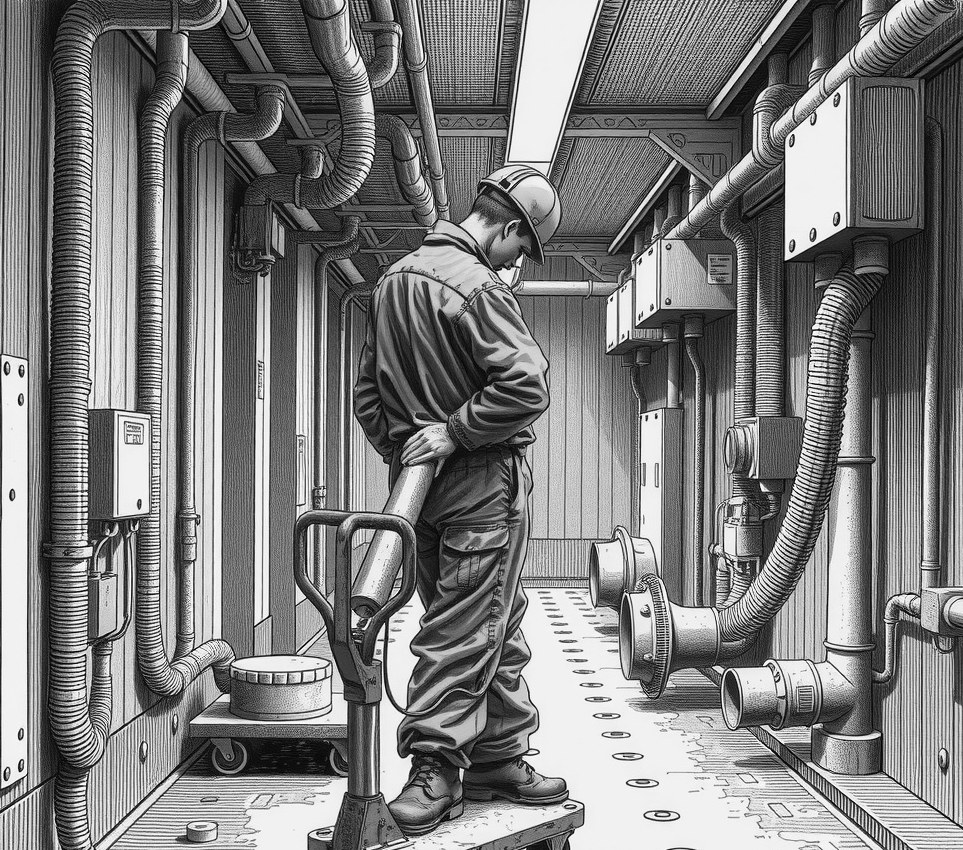

Pallas Ring Station . 9 July 2090

I am watching six nuns from the Order of the Sealed Valve stand guard around a ruptured hydraulic line in the main transept of Pallas Ring Station.
Sister Maeve steps into the red mist with a heavy torque wrench held high. Every twenty seconds, a jet of warm synthetic oil splashes across her habit and coats the deck in grease. Behind her, three station fitters wait with a patching clamp, looking bored.
"The holy text is absolute," Sister Maeve says, wiping oil from her goggles. "Sentence three says the leak shall inherit the berth."
The line broke four weeks ago during a power spike. Instead of letting maintenance seal the hole, the nuns built a rail around the spray and declared the floor sacred. The oil has since spread into three nearby airlocks, forcing seventy cargo pods to dock elsewhere.
An engineer shows me his slate, which displays the original manuscript from 2040. A note in the margin confirms a dead translator typed 'leak' instead of 'meek', and 'berth' instead of 'earth'.
The nuns do not care.
"Mistakes are part of the plan," Sister Maeve says. "If the Lord meant earth, he would have given us soil instead of three thousand square metres of prime docking space."
Station chief Aris Thorne has given up trying to shut off the main valve. Whenever he touches the housing, the nuns ring the station bell and lay down in the oil.
Tonight, the fluid reaches my ankles.
Sister Maeve hands me a plastic bucket and asks if I want to help scoop the inheritance into Lock Four.